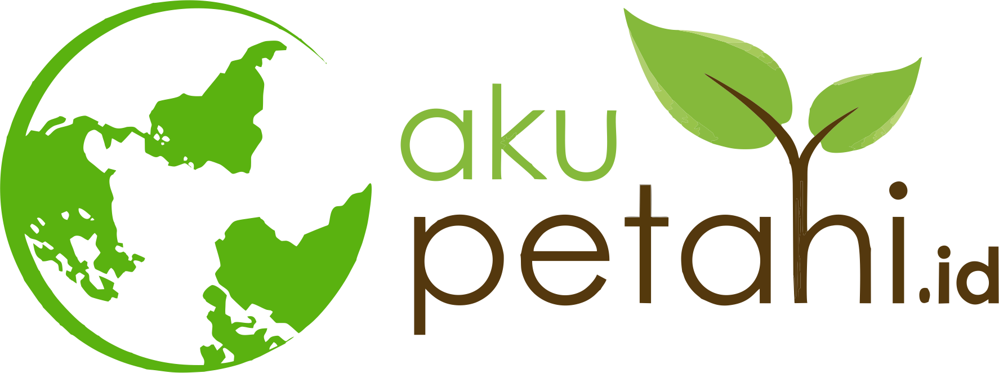

- Katalog Produk
-
Tentang Kami
Nama Aplikasi: Pasaryuk
Latar Belakang
Melihat para pekerja di pedesaan seperti petani dan peternak, yang terkadang mereka mengalami kesulitan sangat menjual hasil produksi mereka dan menemui berbagai masalah. Maka dari itu saya mempunyai gagasan untuk mengatasi masalah tersebut dengan menjadi jembatan antar produsen dan konsumen agar tidak ada pihak yang merugikan produsen dan konsumen juga mendapat hasil terbaik karena membeli langsung dari tempat produksi.
Mitra Kami
